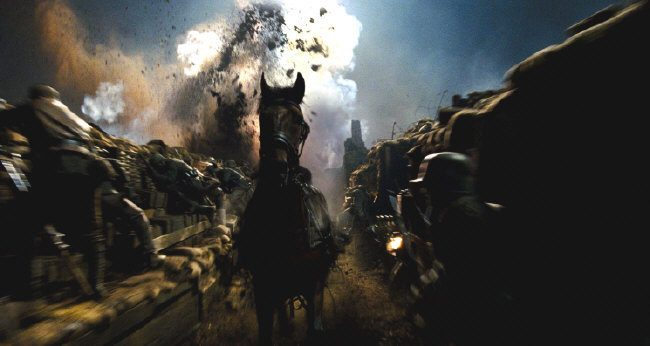

Ted Narracot (Peter Mullan) é um camponês destemido e ex-herói de guerra. Com problemas de saúde e bebedeiras, batalha junto com a esposa Rose (Emily Watson) e o filho Albert (Jeremy Irvine) para sobreviver numa fazenda alugada, propriedade de um milionário sem escrúpulos (David Tewlis). Cansado da arrogância do senhorio, decide enfrentá-lo em um leilão e acaba comprando um cavalo inadequado para os serviços de aragem nas suas terras. O que ele não sabia era que seu filho estabeleceria com o animal um conexão jamais imaginada. Batizado de Joey pelo jovem, os dois começam seus treinamentos e desenvolvem aptidões, mas a 1ª Guerra Mundial chegou e a cavalaria britânica o leva embora, sem que Albert possa se alistar por não ter idade suficiente. Já nos campos de batalha e durante anos, Joey mostra toda a sua força e determinação, passando por diversas situações de perigo e donos diferentes, mas o destino reservava para ele um final surpreendente.

Cena do Filme Cavalo de Guerra, Bombardeios em Campo
A origem. Cavalo de Guerra foi baseado no livro "War Horse", de Michael Morpurgo, lançado em 1982.
Diretor
Steven Spielberg
Steven Spielberg, premiado cineasta, produtor cinematográfico, roteirista e empresário estadunidense. Spielberg é o diretor que tem mais filmes na lista dos 100 Melhores Filmes Americanos de Todos os Tempos, feita pelo American Film Institute.